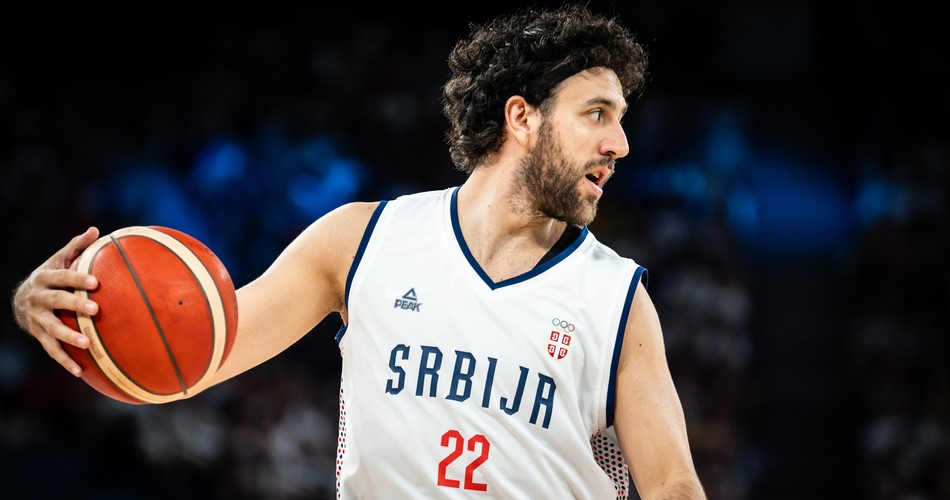
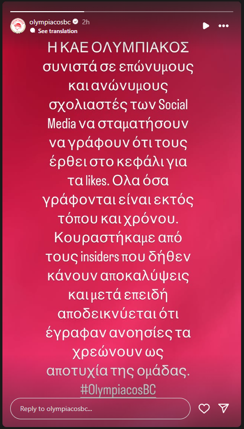

12/06/2025 – 19:37
Είναι γνωστό το ενδιαφέρον του Ολυμπιακού για έναν γκαρντ από το πάνω ράφι ώστε να καλυφθεί το κενό που δημιουργούν οι αποχωρίσεις(Γουίλιαμς-Γκος υπέγραψε στην Ζάλγκιρις, Ναζ Μίτρου-Λονγκ και Λούκα Βιλντόζα φαίνεται πως δεν συνεχίζουν στους ερυθρόλευκους) και η περίπτωση του Βάσα Μίσιτς έχει τραβήξει τα βλέμματα πολλών μεγάλων ευρωπαϊκών ομάδων.
Μέχρι πριν λίγες μέρες η Φενέρ φαινόταν ως η νικήτρια στην μάχη για τον έμπειρο Σέρβο διεθνή, με τον ατζέντη του παίχτη να ταξιδεύει στην Κωνσταντινούπολη για την οριστική συμφωνία του παίχτη αλλά ακολούθησε νεκρική σιγή.
Πλέον, πηγές στέλνουν τον Μίσιτς στο λιμάνι, αναφέροντας μάλιστα πολύωρη προσωπική συζήτηση μεταξύ του παίχτη και των προέδρων της ΚΑΕ Ολυμπιακός όπου ήρθαν σε προφορική συμφωνία, με την ΚΑΕ να αναγκάζεται, μέσω των μέσων ενημέρωσής της, να διαψεύσει την είδηση.
Προς το παρών δεν υπάρχει οριστική συμφωνία του Μίσιτς με κάποια ομάδα παρά τις πλουσιοπάροχες κρούσεις και από την Ντουμπάι, όμως όλα δείχνουν τους Πειραιώτες ως το φαβορί για την απόκτηση του.
